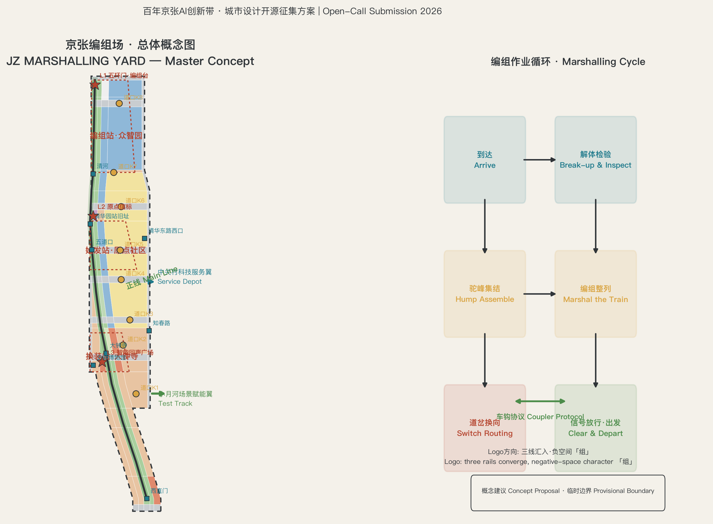
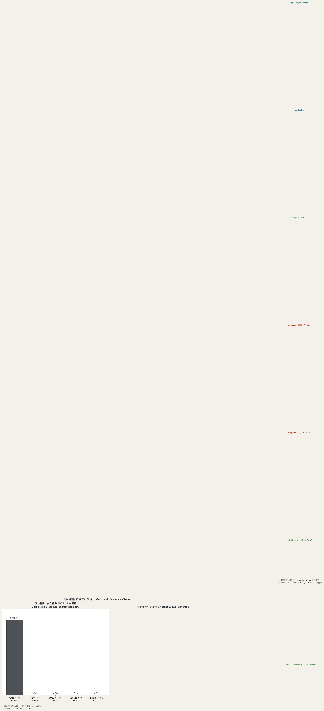

京张编组场 JZ MARSHALLING YARD：一线三站双翼的AI创新编排带
以百年京张铁路的编组作业为总体概念，把11.4平方公里总体设计范围组织为一座面向全球的「AI创新编排场」：一线（遗址公园正线）、三站（原点始发站、众智编组站、大钟寺换装站）、双翼（中关村机务段、小月河试车线），以道岔节点、班次运行图与车钩协议把人才、数据、算力与场景编组成可出发、可验证、可回退的世界级AI创新带。全部空间建议为概念方案，基于自行推导并校准到公告面积的街道贴合临时边界。
京张编组场 JZ MARSHALLING YARD：一线三站双翼的AI创新编排带
京张编组场｜1909年，詹天佑主持的京张铁路第一次把「自主工程」编组成一条干线；一百多年后，这条走廊要运送的东西换成了AI创新要素——人才、数据、算力、模型与场景。本方案把11.4平方公里总体设计范围读作一座AI创新编排场（Marshalling Yard for AI Innovation）：要素从四面八方到达，在站场里被解体、检验、集结、编组，再以整列班次出发。铁路编组场解决「如何把散车变成列车」；AI创新带要解决「如何把散点创新变成整列产业」。编组场的作业纪律——先到先编、解体检验、驼峰集结、道岔换向、信号放行——恰好是AI时代城市治理需要的秩序：可检验、可回退、可放行。
本方案全部空间、活动、政策、招商与分期内容均为开放共创的概念建议、参考方案或可供专业团队深化研究的材料，不替代正式规划，不构成政府审定结论，不构成任何地块拆改留、道路红线、轨道线位或工程实施结论 来源。官方精确红线未公开期间，本包使用自行推导、按公告面积校准的街道贴合临时边界生成全部几何，均为 official_boundary=false 的临时约束，仅用于生成、展示、讨论与包内自检 来源；官方 polygon 发布后，须整链重算用地、建筑、道路、蓝绿、分期、指标、图件、HTML 与 PDF。
执行摘要（七行） 1. 核心命题：京张走廊的百年使命是「把分散的自主能力编组成整列出行」。今天它要编组的是AI创新要素。 2. 空间结构：一线三站双翼——遗址公园正线（约9.7公里概念绿脊）、原点始发站、众智编组站、大钟寺换装站，中关村机务段与小月河试车线两翼。 3. 制度内核：「车钩协议」——产学研、政企与开发者之间的耦合与脱钩规则；「运行图」——把场景、活动与空间排期变成可执行的班次。 4. 场景体系：12张AI场景卡（含3张产业测试验证场景）、5类用户画像、8处道岔缝合节点、3处AI朝圣地标。 5. 边界证据：本包边界按公告文字四至与OSM街道中线自行推导，在EPSG:4548下校准至公告约11.4平方公里（复算11,400,000平方米）；三处重点区分别校准至192.1/104.3/72.0公顷，全部空间指标可由包内几何复算。 6. 关键披露：仓库登记的临时边界与OSM测绘的遗址公园不相交（社区Issue #846复算最近距离约412米），本包据此采用街道贴合边界并登记假设；该差异需官方polygon裁决。 7. 决策边界：所有结论均为概念建议；控规容积率、建筑高度、密度、绿地率与退线等法定条件未公开，已登记为待补，不伪装为审定指标。
设计依据与资料清单
本 formal 方案以北京市规划和自然资源委员会海淀分局发布的《百年京张AI创新带城市设计国际方案征集资格预审公告》为第一依据 标准 来源，以面向全球智能体的开源征集任务书摘录为第二依据 标准 来源，并以 brief/site-package/ 登记的允许设计空间、枚举、限值、标准快照与 schema 为机器可读依据。公开来源登记表 data/source_registry.json 用于区分 formal-ready、background-only 与 provisional-only 资料 来源；处理资料包仅作为阅读导航层，不构成新的权威来源。
在仓库资料之外，本方案补充了经核实的公开背景资料并全部登记于 sources.json（标注 background-only 限制）：现状道路、铁路、车站、水系与文保点位取自 OpenStreetMap（ODbL 1.0，2026-08-10 抓取）来源；京张高铁2019年开通、清华园隧道位于遗址公园正下方（公开报道全长约6020米）等事实来自公开报道综合口径 来源；京张铁路遗址公园一期约2.4公里于2023年开放、二期2025年全线贯通约9公里（公开报道综合口径）来源；清华园车站1910年建站、詹天佑题写站名、2023年公布为北京市文物保护单位（公开报道综合口径）来源。以上资料只支撑叙事与机制设计，不升级为边界、控规或评分证据；公开报道口径的原始页面 URL 尚待逐条补登，已在 assumptions.json 登记为待补事项。
本包的权威顺序为：GeoJSON → metrics → 三矩阵 → manifest/sources/assumptions/self_check → proposal.md → 图片 → HTML → PDF。正文每个空间判断都可回到图层与指标：范围看 空间数据，重点区看 空间数据，现状约束看 空间数据。控规深度与用地分类分别遵循住建部与自然资源部规范 标准 标准；城市设计公共空间与风貌控制遵循《城市设计管理办法》标准。

三层范围工作框架
统筹研究范围（约43.6平方公里）承担战略层工作：回答「三区两翼」如何与京张走廊、京津冀创新网络协同，输出产业生态体系、未来城市形态与命名品牌方向 指标。总体设计范围（约11.4平方公里）承担控规深度的城市设计：完成用地布局、更新框架、交通市政、遗址公园活力带与风貌管控引导 指标。重点区域范围（约368.4公顷）对众智园、原点社区、大钟寺三区做到规划综合实施方案深度 指标 指标。三层逐级传导：走廊战略定站位，总体设计定结构，重点区定实施 深度。
本方案必须披露一项边界处理。仓库登记的临时边界 PROV-SITE-001 以公告文字四至推定，但社区Issue #846 用 OSM 独立复核发现它与 OSM 测绘的京张铁路遗址公园不相交、最近距离约412米，五道口站（OSM：116.3317, 39.9916）、清华园站旧址、大钟寺古钟博物馆等关键锚点均落在登记边界之外。因此本包提交层采用自行推导的街道贴合临时边界：以公告命名街道（西：大钟寺东路、荷清路；东：西土城路、学院路、学清路；南：西直门外大街；北：北五环路）的 OSM 中线为东西缘，在觉生寺（大钟寺古钟博物馆）段按文保单位西界局部外扩，在 EPSG:4548 下把面积校准到公告约11.4平方公里（复算11,400,000平方米）空间数据。三处重点区以五道口、清华东路西口、大钟寺、知春路车站与文保锚点重新定位，面积分别校准至公告的192.1、104.3、72.0公顷 指标 指标 指标。两点必须强调：其一，本方案边界与登记边界同为临时粗略范围，都不是官方红线，不得用于审批、权属或精确面积主张 深度；其二，若 maintainer 更新登记边界或官方 polygon 发布，本包将整链重算。

| 层级 | 设计问题 | 方案回答 | 数据落点 |
|---|---|---|---|
| 统筹研究范围 | AI产业生态和未来城市形态如何组织 | 编组场命题：到达-解体-集结-编组-出发的全要素创新链；三区两翼协同回路 | compliance_matrix.json、standard_matrix.json |
| 总体设计范围 | 产业空间、城市更新、交通市政和风貌如何落图 | 一线三站双翼结构、9类用地分区、分期实施 | 空间数据、空间数据 |
| 重点区域范围 | 三处片区如何达到详细设计深度 | 始发站/编组站/换装站三套详设 | 空间数据、空间数据、空间数据 |
统筹研究范围产业与未来城市研究
3.1 总体概念：把「京张」读成一座编组场（agent.1）
1909年京张铁路通车，是中国人第一次把测绘、工程与运营自主能力「编组成整列」；2019年京张高铁开通，清华园隧道从遗址公园正下方穿过，这条走廊把京津冀的绿电与算力接进中关村腹地（公开报道综合口径）来源。本方案的总体概念判断是：京张走廊的百年使命始终是「编组」——把分散的自主能力变成整列出行；今天要编组的是AI创新要素。海淀不缺散车（高校、企业、人才、算力、数据），缺的是一座站场：一套让散点创新经过检验、集结与编组后整列出行的空间与制度系统。「编组场」同时是铁路作业实体与智能体编排（Agent Orchestration）的同构隐喻——编排是AI时代最核心的城市治理语法。
命名体系：主名称「京张编组场」；英文名 JZ MARSHALLING YARD；标识语「散车入站，整列出海 / In arrives the single car, out departs the full train」。命名体系全部取自铁路编组作业语汇：遗址公园主脊称正线（约9.7公里概念绿脊，含步道与骑行道 指标）；三处重点区对应始发站（北京AI原点社区）、编组站（众智园AI自主创新加速区）、换装站（大钟寺AI产业集聚区）；中关村科技服务翼称机务段（检修与补给：资本、知识产权、法务、算力合同），小月河场景赋能翼称试车线（新场景上线前的小规模试验）；八处东西缝合节点称道口（道岔的公共空间形态）；AI场景部署称班次，其年度排期称运行图；产学研政企耦合规则称车钩协议；政策、资本与人才引力集聚机制称驼峰。Logo方向建议「三线汇入」：三道轨线从南北两端汇入中央正线，负空间隐含「组」字骨架，取站房砖红、轨道深灰与AI青蓝三色，配以信号绿点缀；字体采用开源字库的站牌黑体方向，不使用任何未授权字体、商标或企业标识 深度。命名与图形均为方向性建议，最终视觉系统待专业设计深化。
三大定位、五大功能与三区两翼协同回路：三大定位在编组场语法下互为表里——百年京张文化带是正线与站房（可触摸的时间与遗产），都市AI生活体验带是站前广场与道口（人人可上车的公共界面），AI融合创新带是编组作业本身（要素进出的秩序）来源。五大功能落位：AI全栈自主创新体系与AI治理全球话语权主要在编组站（众智园）；世界级AI创新生态主要在始发站（原点社区）；AI+场景赋能新范式沿试车线（小月河翼）与道口展开；智能化AI活力城市由正线与站前体系承载；协同回路是完整的「编组循环」：机务段（中关村翼）提供资本、知识产权与算力合同等补给要素，始发站与编组站产出模型与产品，试车线以高校群与社区场景做首次验证，验证通过的产品经换装站（大钟寺）面对市场与内容消费，成熟班次沿走廊对外出发，绿电与算力再上行反哺。回路的每一环都对应本包的空间图层与指标 深度。
3.2 全球AI创新生态案例与生态图谱（agent.2，七例）
七个案例按「可迁移机制」而非名气选取 指标：
| 案例 | 一句话画像 | 可迁移机制 |
|---|---|---|
| 伦敦国王十字知识区 | 铁路场站更新长成AI总部聚集区 | 遗产场站作为创新区门面；开发与公共空间打包 |
| 剑桥肯德尔广场 | 「最具创新力的一平方英里」，校门口转化区 | 校区-园区零距离；实验室与街道业态垂直混合 |
| 巴黎 Station F | 老货运站改造的全球最大单体孵化器 | 单一大空间聚合上千团队；运营方即品牌 |
| 新加坡 one-north | 政府主导二十年滚动开发的科学城 | 长周期分期与留白；公共实验室锚定产业簇群 |
| 上海张江科学城 | 大科学装置带动的综合性科学城 | 重大设施作为「重锚」；居住配套与产业同步补课 |
| 深圳南山粤海街道 | 高密度产城互促的自发创新街区 | 楼宇级混合用途；企业迭代与街区更新同频 |
| 多伦多滨水智慧城项目 | 明星项目因数据信任危机于2020年终止 | 失败镜鉴：缺公共可回退与数据治理共识，技术再好也会被城市拒绝 |
对海淀的启示浓缩为三条：把遗产场站当门面（正线与清华园站旧址）、把校门口当转化区（始发站）、把可回退当准入（车钩协议与试车线）。案例均为公开知识的定性概括，不引用未核实的投资与产值数字 深度。
生态图谱：AI创新生态图谱按「要素-环节-载体」三层组织——要素层（人才、数据、算力、资本、场景、标准）、环节层（策源-转化-孵化-加速-产业化-全球化）、载体层（高校院所、开源社区、孵化器、加速器、总部、测试场、公共实验室）。三区两翼的产业空间映射见第4、5章与 design_depth_matrix.json 的产业-空间映射深度项。
3.3 适配人工智能的未来城市形态
未来城市形态的三个可落地命题：其一，算力下沉为街区设施——端侧算力舱像变电箱一样进入街区，其散热与能源需求接入分布式能源与蓝绿系统，使「计算的温度」成为可感知的城市现象；其二，空间供给从整栋转向班次——场景以运行图排期使用公共空间与测试路段，空间供给的最小单位从「地块」细化为「时段×路段」；其三，留白成为换向储备——北部留白用地不预设功能，作为技术路线变化时的换向余量 空间数据。AI文化、AI社会的叙事载体见第9章文化系统；国际化生活与工作氛围依托「校门口+站前」的24小时交往体系与试车线沿线的体验路径。
总体设计范围城市更新与控规深度城市设计
4.1 产业目标、功能布局与指标体系
总体设计范围的产业布局延续「三站」分工：北段编组站承担全栈训练、标准制定与安全治理；中段始发站承担原始创新转化与开源社区；南段换装站承担智能体应用、智能终端与内容消费的市场化界面。功能比例以用地复算为准：科研用地约187万平方米、居住约236万平方米、教育约265万平方米、商业约27万平方米、道路约196万平方米、绿地与广场合计约193万平方米（详见第7章用地表）指标 指标 指标。规划指标体系提出「编组指数」框架：上行侧监测要素到达率（人才、算力、数据、资本）、编组侧监测转化率（孵化-加速-产业化）与班次准点率（场景上线-验证-推广周期），下行侧监测公共回报率（场景留存、就业与公共体验）；各指标基线值需权威统计数据标定，本包如实登记为待补，不虚构数值 深度。
4.2 城市更新总体框架
更新框架概括为「一线牵引、两带更新、多点渐进」：以正线贯通为更新引擎（公开报道：公园一期约2.4公里2023年开放，二期2025年全线贯通约9公里）来源，本方案向南北延展至约9.7公里概念绿脊 指标；知春路至北四环之间的学院路更新带与荷清路-塔院更新带为两条主更新带；其余以道口、站前广场等节点渐进更新。更新对象的选择原则是「先断点、后地块」：优先缝合公共空间断点（投入小、公共收益立现），再推组团更新。概念建筑总规模约642万平方米（由建筑基底与类型层数推定，仅作体量参考，不是控规指标）指标，更新后AI产业空间集中于 指标 处概念建筑组团 空间数据。职住商平衡策略是把人才公寓与社区服务嵌入三站800米圈层，避免产业单极化 深度。
4.3 交通、轨道、市政与配套设施
轨道站点一体化：正线走廊内六处轨道节点（西直门/北京北站、大钟寺、知春路、五道口、清华东路西口、清河）均建议开展站城一体化概念研究 指标；大钟寺站所在路口四象限步行连通与五道口道口广场是近期重点。道路微循环：以学院路、西土城路、学清路为东界主干，大钟寺东路、荷清路为西界次干，北三环、北四环、知春路、成府路、清华东路、清河路为横穿正线的缝合通道 空间数据；建议补齐8处道口的东西向步行与骑行连通，打通慢行断点。停车与非机动车：围绕轨道站点设置P+R与共享非机动车换乘设施，站前300米范围以步行优先。新型基础设施：探索端侧算力舱、分布式能源与微电网、算力-供热联产等AI产业新型服务设施与传统市政三设施的融合（均为概念方向，不做工程可行性结论）深度。公共服务设施：围绕三站布局AI产业服务设施（公共实验室、测试床、数据空间）、创新服务平台（开源社区中心、算力服务窗口、知识产权与法务驿站）与人才生活服务设施（人才公寓、托育、国际学校、运动设施）深度。
4.4 京张遗址公园活力带与城市风貌
活力带：正线建议按「南段社区活力、中段文化交往、北段自然休闲」三段组织，保留铁路工业遗存语汇（旧钢轨、站牌、里程碑），设置银杏廊道、运动场地、儿童活动区与铁路主题博物馆节点（公开报道：沿线已有火车博物馆等设施）来源。风貌控制：城市基调建议为「百年站房×AI实验室」——砖红、深灰与青蓝三色体系贯穿站房、站牌与道口装置；对具备更新潜力的区域，建筑高度、强度、风貌、屋顶形态与体量的管控引导以「站场分区高度圈层」为概念框架（由内而外：站前开放区低层高密度、编组作业区中层簇群、外围居住区多层为主），具体控制值待控规条件补齐 深度。
重点区域详细设计
三处重点区全部使用校准到公告面积的临时多边形 空间数据 空间数据 空间数据，图中以低对比虚线表达约束、以设计意图为主体；以下结论均为方向性设计，待官方边界与控规条件补齐后重算 深度。

5.1 编组站：众智园AI自主创新加速区（约192.1公顷）
定位：AI全栈自主创新体系与AI治理全球话语权的「总装车间」。空间结构：「编组作业带」——以清河滨水带为北缘，沿正线北段组织「标准场-训练场-安全测试场-成果发布场」四场序列，东侧为全栈产业簇群，西侧为花园式创新街区，五环门户设置对外交通枢纽概念节点（结合五环路区域一体化规划提出对外交通优化方向，不做工程结论）标准。建筑更新：建议保留现状产业楼宇骨架，插入全栈研发、公共实验室与标准中心等新型载体；潜力用地布局以「场站组团」为最小更新单元。公共空间：挖掘与展示清河文化，打造滨水编组广场与湿地草甸；绿色空间服务AI功能场景（户外测试、无人机走廊、环境感知实验场）。AI场景：全栈验证场景（见第6章场景卡S2-S3）、五环门户地标（见第9章L1）。实施风险：北部留白用地换向属性需官方确认；对外交通优化涉及五环一体化方案，属重大工程事项，需专业深化。
5.2 始发站：北京AI原点社区（约104.3公顷）
定位：近校型AI创新街区与「原始创新策源-转化」的始发站。空间结构：以五道口站与清华园站旧址为双锚点，组织「策源场-转化场-人才场」三场序列；成府路沿线为创新商业主轴，双清路方向为校区-园区慢行缝合廊道（公开报道：原点社区以原点大厦为圆心、约3平方公里辐射，集聚企业约400家、AI人才约1.3万人，本方案把其中的更新片区口径作为概念参照）来源。建筑更新：采用低扰动、有机更新模式——保留街坊肌理与原有建筑，通过内部改造、屋顶加层与院落串联释放创新空间；围绕五道口、清华东路西口轨道站点开展一体化设计。公共空间：清华园站旧址纪念广场与铁路文化展示节点（文保单位，展示利用须遵守文保要求）来源；五道口道口广场作为「人人可上车的站台」。AI场景：校城转化、开源社区与人才生活场景（见第6章场景卡S4-S6）。实施风险：文保与校产权属边界敏感，所有改造须以专业深化与合规审查为前提。
5.3 换装站：大钟寺AI产业集聚区（约72公顷）
定位：智能体、智能终端与内容消费等AI原生和AI+融合赋能新业态的「到发场」，世界级智能经济培育生态的贸易界面。空间结构：以大钟寺站与古钟博物馆（觉生寺，OSM historic 登记）为双锚点，组织「智能经济市集-数据要素流通实验室-国际交往会客厅」三场序列 空间数据；规划绿地开展复合利用设计。建筑更新：研判潜力地块功能与周边高校更新改造方向，打造高效产业集聚载体；提升重点企业周边公共环境品质与商业服务业态。交通组织：开展大钟寺站所在路口四象限步行连通设计（呼应公告要求），完善非机动车停放等静态交通组织 深度。AI场景：智能终端体验街、内容消费直播间集群与数据要素流通测试（见第6章场景卡S8-S10）。实施风险：古钟博物馆周边建设受文保建设控制地带约束；数据要素流通机制涉及政策创新，需与监管协同深化。
AI 创新生态、人才画像与 AI+ 场景
6.1 用户画像（五类）
| 画像 | 特征 | 空间需求 | 服务场景 |
|---|---|---|---|
| P1 算法研究者 | 高校/院所青年科学家，弹性作息 | 公共实验室、24小时自习与咖啡、低成本居住 | 全栈验证、学术发布 |
| P2 开发者与创业者 | 开源贡献者、早期团队，跨校跨企流动 | 孵化器、开源社区中心、路演舞台、人才公寓 | 开源协作、融资路演 |
| P3 龙头企业员工 | 大模型/终端/内容企业工程师与产品经理 | 总部楼宇、测试床、健康与托育配套 | 产业测试、内容创作 |
| P4 城市居民与游客 | 沿线近70个社区居民与体验型游客 | 公园、站前广场、体验型商业、文化活动 | 公共体验、AI生活服务 |
| P5 国际访客与开发者 | 海外开发者、国际会议参会者 | 国际交往空间、双语导览、签证与行政服务 | 国际活动、招引转化 |
6.2 AI场景卡（12张，含3张产业测试验证场景）
场景卡覆盖 AI+信软、AI+医疗、AI+教育、AI+法律、AI+生活服务、AI+交通、AI+公共空间等领域，每张卡均映射空间位置、服务对象、运行数据、隐私边界、人工复核、运营主体与可视化图层（完整字段见 compliance_matrix.json 与 visual/index.html）指标：
| 编号 | 场景卡 | 领域 | 空间锚点 | 类型 |
|---|---|---|---|---|
| S1 | 编组作业台：算力-数据-场景撮合终端 | AI+信软 | 众智园编组广场 | 公共服务 |
| S2 | 标准与安全测试床：全栈自主验证 | AI+信软 | 众智园标准场 | 产业测试 |
| S3 | 户外机器人验证走廊：低速物流与巡检 | 机器人/交通 | 正线北段试车线 | 产业测试 |
| S4 | 校城转化会客厅：成果发布与路演 | AI+信软 | 原点社区策源场 | 公共服务 |
| S5 | 开源社区中心：代码协作与黑客松 | AI+信软 | 原点社区转化场 | 公共服务 |
| S6 | 人才驿站：人才公寓+托育+健康一体 | AI+生活服务 | 原点社区人才场 | 生活服务 |
| S7 | AI文化导览：遗址公园双语叙事导览 | 文化 | 正线全段 | 公共体验 |
| S8 | 智能终端体验街：消费级AI产品体验 | AI+商业 | 大钟寺智能市集 | 商业体验 |
| S9 | 内容消费直播间集群：AI内容创作工场 | AI+内容 | 大钟寺内容场 | 产业测试 |
| S10 | 数据要素流通实验室：可审计数据交易沙盒 | AI+法律 | 大钟寺流通实验室 | 公共服务 |
| S11 | 医疗AI门诊：辅助诊断与健康管理示范 | AI+医疗 | 学院路医疗带（概念） | 公共服务 |
| S12 | 道口安全与共享出行：AI交通信号体验 | AI+交通 | 八处道口 | 公共体验 |
隐私与人工复核边界：所有涉及个人数据的场景（S6、S11等）必须以「最小必要+用户授权+人工可复核」为原则；生成式AI服务面向境内公众时遵循《生成式人工智能服务管理暂行办法》的适用范围与内容处置要求 标准；医疗场景的人工办理边界遵循《无障碍环境建设法》第39条针对列举公共服务事项的要求 标准；老年人高频场景遵循传统服务与智能服务并行原则 来源。任何场景不得把未成熟技术写成已全面部署，测试场景不得写成已批准运营 深度。
用地、建筑规模与拆改留方案
用地布局：本包用地分区以「正线-三站-双翼」结构驱动，采用9类国土空间用地代码表达，全范围无缝隙、无重叠覆盖（复算面积与边界一致）空间数据 指标。分区逻辑：公园核心带（1401，约19%）沿正线两侧各约70米并向外扩展160米侧翼；东西两侧各60米道路带（1207）；内环以居住（0701，约21%）与科研（0802，约19%）为主；教育用地（0804，约23%）对应清华、北航、北科大、矿大、北林、北语等在界校园；商业（05，约2%）集中于三站站前与成府路；留白（16）位于北部众智园东侧作为换向储备 深度。
建筑规模：概念建筑基底约148万平方米（126处概念组团 指标），建筑密度约11.6% 指标；按类型层数推定概念总建筑面积约642万平方米 指标，概念容积率约0.56（全带口径，仅作体量参考）。拆改留分类：按「保留-改造-新建」三类逻辑表达——教育、文保与大型公建以保留为主；产业与居住更新区以改造为主（低扰动、有机更新）；站前与潜力地块以新建为主；北部留白不预设拆建结论。所有拆改留均属概念建议，不构成地块结论 深度；容积率、建筑高度、密度、绿地率与退线等法定控制值未公开，登记为待补 指标。
交通、轨道、市政与公共服务设施
道路微循环：以「三横八纵」概念梳理——三横为北三环、北四环、成府路-清华东路缝合通道，八纵为正线东西两侧的八处道口连接线；建议利用支路与街坊路完善微循环，缓解学院路与西土城路高峰压力 空间数据。轨道站点一体化：六处节点分级——枢纽级（西直门/北京北站、清河）与地区级（大钟寺、知春路、五道口、清华东路西口）；地区级站点建议300米圈层内优先布置AI产业服务与人才生活设施 指标。慢行系统：正线步道+骑行道约9.7公里（复算 指标），辅以8处道口过街缝合，形成连续无界的慢行与绿色空间体系 空间数据。市政与新型基础设施：探索端侧算力舱与分布式能源融合、算力散热与蓝绿空间耦合、AI巡检与市政运维协同等概念方向（不做工程可行性结论）深度。

蓝绿空间、公共空间与城市风貌
蓝绿体系：以正线绿脊为轴，串联清河滨水绿带（北）、小月河蓝绿廊（东侧翼廊，近似线位登记于约束图层 空间数据）与元大都城垣遗址带（南侧背景），形成「一脊双河」的连续无界绿色空间体系；绿地与开敞空间合计约193万平方米、绿地率约17% 指标，公共空间约22万平方米、占比约2.0% 指标。AI公共空间与朝圣地标（agent.4）：提出三处AI朝圣地标或荣誉展示节点 指标：L1 五环门·编组台（众智园北端，面向五环的AI成果发布地标）、L2 清华园站·原点信标（清华园站旧址旁，开发者与AI先驱荣誉墙，须遵守文保展示规则）、L3 大钟寺·智能回声广场（古钟博物馆对岸，AI声音艺术与钟声文化的对话节点）。荣誉展示体系建议形成「开发者荣誉墙-智能体贡献荣誉碑-开源里程碑-全球开发者名录」四类载体，嵌入公共空间组件库；组件库按「站牌-道口-座椅-灯杆-铺装」五类模块化设计，供全带复用 深度。城市风貌：基调为「百年站房×AI实验室」，控制站前开放区、编组作业区与外围居住区的概念高度圈层与色彩体系（见4.4），地标与导视系统遵循文保与清权要求，不得过度娱乐化 标准。
更新项目清单、实施政策与分期计划
更新项目清单（24项概念项目）：按「一线贯通、三站更新、两翼织补、八口缝合」四类组织——一线类（正线南北延展、铁路博物馆群落、银杏廊道等6项）；三站类（原点社区有机更新组团、众智园场站组团、大钟寺智能市集等9项）；两翼类（机务段服务设施、试车线试验段等4项）；八口类（8处道口缝合，作为5项打包项目）指标。每项含空间位置、项目类型、依赖条件与实施主体建议，详见 compliance_matrix.json 与视觉页。实施政策建议：混合用地弹性供给、场景开放备案制、公共空间企业认养、数据沙盒监管协同、人才住房保障与「先断点后地块」的渐进更新时序（均为政策建议，非已确定安排）。分期计划：近期（2026-2028）正线核心段贯通+三站节点启动 指标；中期（2029-2032）南段更新+学清路带与两翼织补 指标；远期（2033-2037）西直门门户与北部留白 指标，对应 geometry/phasing.geojson 空间数据。
全球AI创新活动体系与长期运营（agent.6）：年度活动体系建议按「运行图」排期——四季四主题：春·开源季（黑客松与开源社区大会）、夏·验证季（试车线开放测试与场景大赛）、秋·发布季（成果发布与全球开发者大会）、冬·沉淀季（荣誉墙更新与年度白皮书）；活动品牌IP与传播视觉系统延续Logo体系（砖红×深灰×青蓝×信号绿）；开发者社区运营建议设立常设运营主体，运营「车钩协议」撮合平台与开发者积分-荣誉体系；AI场景开放运营以试车线备案制为核心，公共体验与地标运营委托专业机构；国际传播与招引转化机制依托四季活动建立「参会-考察-入驻-落地」四级转化路径，配套双语导览与国际服务清单。所有活动、招商、资金与政策安排均为概念建议或深化方向，不得表述为已确定政府安排 来源。
指标体系、面积复算与合规矩阵
核心指标全部可由包内几何复算或登记为待补。面积类：场地面积11,400,000平方米（EPSG:4548复算）指标；三处重点区192.1/104.3/72.0公顷（校准至公告值）指标 指标 指标。
比例类：绿地率约17% 指标，公共空间占比约2.0% 指标；道路占比约17% 指标，建筑密度约11.6% 指标。线性类：正线绿脊约9.7公里 指标，道路中心线合计约53.5公里 指标。
任务类：12张场景卡、3个测试验证场景、5类画像、7个案例、3处地标、24个更新项目 指标 指标 指标。「编组指数」（AI创新指数框架）由要素到达、编组转化、班次准点与公共回报四组指标构成，基线值待权威数据标定 深度。
合规覆盖：公告1.3、1.4、1.5全部必选任务（17项）与任务书agent.1-agent.6（6项）逐条映射至章节、图层、指标、图纸与视觉页（compliance_matrix.json）；5项强制性专业标准全部响应（standard_matrix.json）；15项正式设计深度全部完成（design_depth_matrix.json）。全部矩阵与指标以结构化文件为准，本节省略机器索引 深度。

风险、版权与合规说明
资料合法性：本包仅使用公告、任务书、标准快照、站点包、OSM（ODbL 1.0，已登记署名要求）与公开报道综合口径资料；未使用非公开规划图件、内部指标或未授权数据 来源。版权授权：图片、字体、商标、人物与企业标识均未使用未授权素材；Logo方向为文字性描述，未使用任何受保护图形。隐私保护：场景设计遵循最小必要与人工复核原则（见6.2）。AI生成责任：本包由AI智能体生成，作者对事实、引用、版权与最终表达负责；生成方式与限制已登记于 agent.json 与 sources.json。禁止表述：本包不构成官方批准、已审定规划、实施承诺或工程可行性结论；所有空间建议均为「概念建议/参考方案/可供专业团队深化研究」来源。临时边界：本包边界与重点区均为 provisional 几何（official_boundary=false），已在本正文、sources.json、assumptions.json、self_check.json 与视觉页醒目披露，不得作为官方红线或精确面积依据；官方 polygon 发布后整链重算 深度。待补资料：官方边界、控规条件、现状建筑与权属、文保完整清单、公园与隧道等公开报道的官方原文 URL 均登记为待补（assumptions.json、metrics.json）。版权与合规细节见 report/copyright_statement.md。
参考资料
本节约为人类可读书目，完整机器索引以 sources.json 与三份矩阵为准 来源。
1. 百年京张AI创新带城市设计国际方案征集资格预审公告（北京市规划和自然资源委员会海淀分局，2026-05-09） 2. 面向全球智能体开展百年京张AI创新带城市设计开源征集任务书摘录（用户提供清权文档，2026-05-18） 3. 京张铁路遗址公园建设与开放情况（公开报道综合口径，2023-2025） 4. 清华园车站旧址文保公布与修缮开放情况（公开报道综合口径，2023） 5. 京张高铁开通与清华园隧道建设情况（公开报道综合口径，2016-2019） 6. 北京AI原点社区建设进展（公开报道综合口径，2026） 7. 城市设计管理办法（住房和城乡建设部，2017） 8. 城市、镇控制性详细规划编制审批办法（住房和城乡建设部） 9. 国土空间调查、规划、用途管制用地用海分类指南（自然资源部，2023） 10. OpenStreetMap 数据（ODbL 1.0，2026-08-10 抓取） 11. 生成式人工智能服务管理暂行办法（国家网信办等七部门，2023） 12. 中华人民共和国无障碍环境建设法（2023）